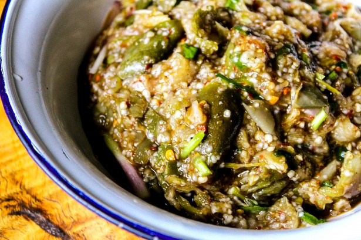

Back
Spicy Asian Zucchini

Pan-seared zucchini halves tossed in a glossy, sweet-and-spicy chili-garlic glaze made from sambal oelek, soy sauce, and mirin, then garnished with crispy fried shallots
Serves 5 as a side
Prep time: 5 mins
Cook time: 10 mins
4.78 Stars
Ingredients
- 5 zucchini, small / medium, cut in half lengthways
- 1 tbsp canola oil
- 3/4 tsp cooking/kosher salt
- 1/4 cup crispy fried shallots
- 1 finely sliced green onion stem
Spicy Sauce
- 1 tbsp canola oil
- 3 minced garlic cloves
- 1 tbsp sambal oelak
- 1 tbsp toasted sesame oil
- 1 tbsp soy sauce
- 1 tbsp sesame oil
- 2 tbsp mirin
Instructions
- Toss: The zucchini in oil then sprinkle with salt and toss to (roughly) coat all over.
- Cook: Heat a large non-stick pan over medium-high heat. Place half the zucchini cut side down and cook for 3 to 4 minutes until the surface is golden. Turn and cook the skin side for 3 minutes. Pile onto a serving plate and repeat with remaining zucchini.
- Sauce: Cool the pan slightly then return to medium heat. Heat the oil then sauté the garlic until light golden. Add remaining Sauce ingredients, simmer for 30 seconds until syrupy.
- Serve: Pour over zucchini, pile on Crispy Asian Shallots and green onion. Eat!
Recipe Notes
- Zucchini: Use small / medium (~15 – 18cm long (6 – 7″) so they cook on the stove or BBQ. If yours are giant, cut it into quarters.
- Doneness: I only take the zucchini to barely cooked (ie still pretty firm), it will keep cooking as you plate up. When super soft, it’s quite watery which dilutes flavour. A reader suggested searing then finishing in oven if you want yours super soft, use temps below!
- Oven: Won’t get the same seared colour but works fine, also easier to cook through until very soft (stove might overly brown). 200°C/375°F (180°C fan) for 25 minutes or until done to your taste.
- Crispy fried shallots: Asian garnish widely available these days, salty, oily, crispy. Such a frequent player in my recipes I even wrote an About page here. Find it in the Asian section of supermarket but cheaper at Asian stores!
- Sambal Oelak: Chilli paste which makes a nice sauce for smothering. Made with fresh chillis (no oil or flavourings), found in large grocery stores and Asian stores. Substitute with sriracha or a not-too-spicy chilli crisp (taste and check) – sauce will have chilli crunch chunks and be oilier (yum!). A reader also made and loved this with Gochujang!
- Soy sauce:Don’t use soy sauce labelled “dark soy sauce”, way too intense and salty, will ruin the dish. Any general “soy sauce” or “light soy sauce” can be used.
- Mirin:is a sweet Japanese cooking wine that is found in large grocery stores and Asian stores. Brings a depth of flavour and sweetness into an otherwise simple sauce, is one of 3 core sauces in Japanese cooking (ie it’s good stuff!). Sub with honey for a non alcoholic version – sauce still great but not quite the same restaurant-y complexity of flavour.
- Storage:Keeps in the fridge for 2 days though the sauce does go watery because the zucchini will continue to sweat water as it cools. Still tasty though because the sauce is quite intense so it can take some watering down
Nutrition
Per serving, assuming 5 servings.
Calories:143cal (7%)
Carbohydrates:12g (4%)
Protein:3g (6%)
Fat:10g (15%)
Saturated Fat:2g (13%)
Polyunsaturated Fat:3g
Monounsaturated Fat:5g
Trans Fat:0.02g
Sodium:642mg (28%)
Potassium:538mg (15%)
Fiber:2g (8%)
Sugar:7g (8%)
Vitamin A:399IU (8%)
Vitamin C:36mg (44%)
Calcium:36mg (4%)
Iron:1mg (6%)